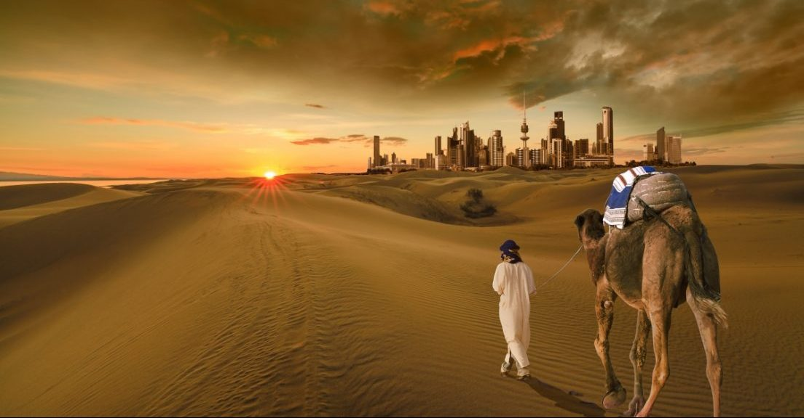

End of Time (Aakhir Sa'ah)
Egypt is known for its Rich history and cultural heritage including ancient civilizations such as the Pharaohs the pyramids, and the Sphinx the country is also renowned for its stunning architecture including Islamic monuments churches and synagogues as well as its vibrant arts and craft scene. Even though Egypt has such a strong and felt presence in the World Market through its tourism and diverse culture it is unable to save the failing currency of the country which is dipping year by year lately the value of the Egyptian pound has decreased by more than 50 percent since March 2022. As a result of the Central Bank switching to a more flexible exchange rate in accordance with the terms of a financial support package from the international monetary fund IMF, Egypt's foreign exchange reserves has fallen and its foreign debts have been tripled in the past decade. You Must Be Wondering Why are we discussing this topic at all why are we showing interest in the losing value of Egyptian pound. The answer being really simple the fall of Egypt was predicted by our Prophet Muhammad sallallahu alaihi wasallam and is the prophecy of the end of times narrated Abu Hurairah may Allah be pleased with him who said; the messenger of Allah blessings and peace of Allah be upon him said: Iraq will withhold its Dirhams and kafis, a measurement of grain Syria will withhold its muds and Dinars and Egypt will withhold its erdab and Dinars and you will return to where you started you will return to where you started, you will return to where you started. The Flesh and Blood of Abu Hurairah bear witness to that according to this Hadith.
Nations namely Iraq Syria and Egypt will withhold their currency. Withholding their currency implies three things. First, the people will stop paying zakat and jizier while being able to do so second, that the people will unable to pay zakat and jizya because of their currency had crashed down and third, the disbelievers will take authority from the Muslims in these lands and they will withhold its resources from the Muslims. We saw that Iraq got captured by the U.S and its currency lost its value. Similarly, Syria got enrolled in Civil War and its currency too crashed down and lost its value. We have seen the prophecy of Iraq and Syria come true in front of our own eyes. Now we are witnessing the fall of Egyptian pound. We don't know what fate awaits for the Egyptian nation and its people, but it is indeed an alarming situation.
Corruption is a widespread problem in Egypt and has been an ongoing issue for many years according to transparency International's corruption perception index. Egypt is ranked 116th out of 180 countries with a score of 36 out of 100 indicating a perceived high level of corruption this is a situation of a Muslim Nation a country where 95 percent of population says when Muslims will stop following Quran and Sunnah and will act opposite to its teachings .What else do we expect a Muslim Nation should be such that no matter. How worse matters get it may never act against the Quran but here we are witnessing Egypt scoring high on corruption meter a stuff for Allah. These prophecies were regarding the end of times and we can witness all of them are coming true as days pass by.
It's time dear brothers and sisters. Though we stop doing what is prohibited in Islam and start working towards our most of the minor signs of kriyama have come true and what remains is only the major signs. When the major signs will start unveiling, we won't be able to realize what's happening around us and how to deal with it the prophet peace be upon him said. The signs shall appear one after the other like the beads in a string follow one another. May Allah help those who were indulged in corruption and other evils to leave their path of Haram. May Allah guide may Allah help us through the trials of the end of times. I mean that's it for today brothers and sisters I hope you like the content? Let us know your thoughts in the feedback section above. We would love to hear from you. Share this post with your family and friends until next time Assalamu alaikum